Starter Assembly (2AZ-FE) Reassembly |
| 1. Install Planetary Gear |
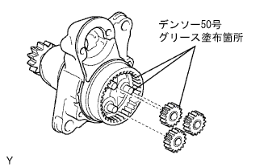 |
Apply Denso No. 50 grease to the starter planetary gears, the flange pins of the planetary shaft and the inside of the planetary bushing reduction portion.
Install the 3 starter planetary gears to the flange pins of the planetary shaft.
| 2. Install Starter Armature Plate |
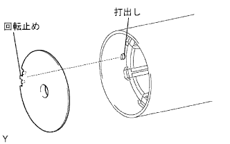 |
Align the rotation stopper of the starter armature plate with the inner embossed portion of the starter yoke assembly, and install the starter armature plate.
| 3. Install Starter Armature Assembly |
Secure the starter commutator end frame assembly with aluminum plates in between.
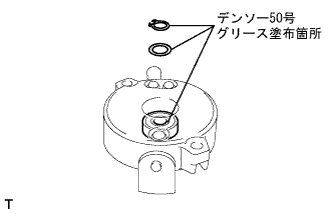 |
Apply Denso No. 50 grease to the washer, a new snap ring and the bearing insertion portion of the armature shaft.
Install the armature shaft to the bearing of the starter commutator end frame assembly.
Install the washer to the armature shaft.
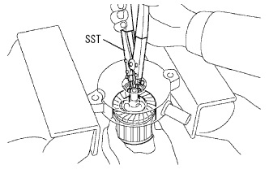 |
Using SST, install a new snap ring.
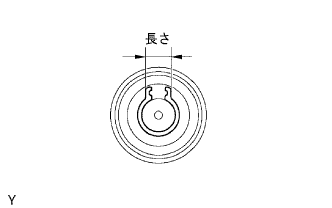 |
Using vernier calipers, check the dimension of the snap ring at the position shown in the illustration.
| 4. Install Starter Commutator End Frame Cover |
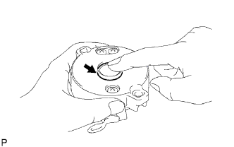 |
Install the starter commutator end frame cover to the starter commutator end frame assembly.
| 5. Install Starter Commutator End Frame Assembly |
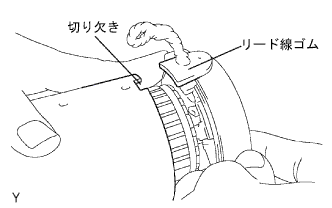 |
Align the lead wire rubber of the starter commutator end frame assembly with the notch of the starter yoke, and install the starter commutator end frame assembly.
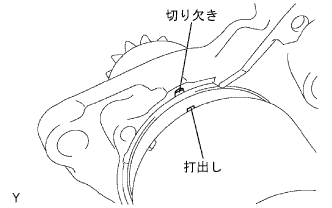 |
Align the embossed position on the outer circumference of the starter yoke assembly with the notch of the starter motor terminal kit, and install the starter yoke assembly to the starter motor terminal kit.
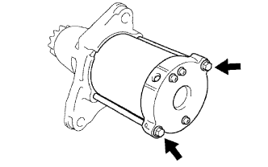 |
Tighten the 2 through bolts.
| 6. Install Repair Service Starter Kit |
 |
Apply Denso No. 50 grease to the outer circumference and hook of the plunger.
Securely engage the hook of the plunger with the lever.
Insert the return spring into the plunger, and install the repair service starter kit.
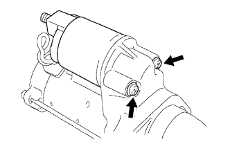 |
Tighten the 2 screws.
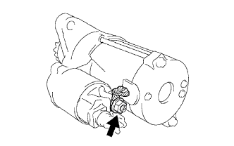 |
Install the terminal C harness with the nut.